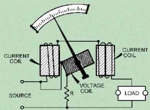

In general, a watt meter is used to measure the electric power of a circuit, or sometime it also measures the rate of energy transferred from one circuit to another circuit. When a moving coil (that is free to rotate) is kept under the influence of a current carrying conductor, then automatically a mechanical force will be applied to the moving coil, and this force will make a little deflection of the moving coil. If a pointer is connected with the moving coil, which will move of a scale, then the deflection can be easily measured by connecting the moving coil with that pointer. This is the principle of operation of all dynamo meter type instruments, and this principle is equally applicable for dynamo meter type watt meter also.
This type of watt meter consists of two types of coil, more specifically current coil and voltage coil. There are two current coils which are kept at constant position and the measurable current will flow through those current coils. A voltage coil is placed inside those two current coils, and this voltage coil is totally free to rotate. The current coils are arranged such a way, that they are connected with the circuit in series. And the voltage coil is connected in parallel with the circuit. As simple as other voltmeter and ammeter connection. In fact, a watt meter is a package of an ammeter and a voltmeter, because the product of voltage and current is the power, which is the measurable quantity of a watt meter.
When current flows through the current coils, then automatically a magnetic field is developed around those coils. Under the influence of the electromagnetic field, voltage coil also carries some amount of current as it is connected with the circuit in parallel. In this way, the deflection of the pointer will proportional to both current and voltage of the circuit. In this way, Watt = Current × Voltage equation is satisfied and the deflection shows the value of power inside the circuit. A dynamo meter type watt meter is used in various applications where the power or energy transfer has to be measured.
 by
by